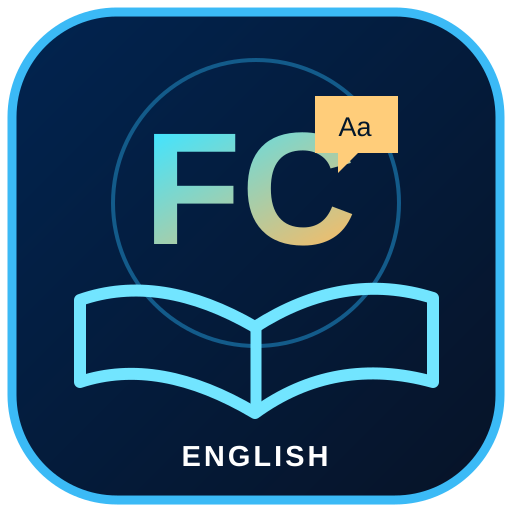

မြန်မာဘာသာဖြင့် အင်္ဂလိပ်စာကို အခြေခံ A0 မှ အဆင့်မြင့် C1 အထိ စနစ်တကျလေ့လာပါ။
Listening, Speaking, Reading, Writing, Quizzes နဲ့ Learning Progress ပါဝင်ပါတယ်။
🌐 Web Lesson ကို အခု စမ်းသုံးမယ်⬇ Android APK DownloadAndroid 8 နှင့်အထက်အတွက် ထုတ်လုပ်ထားပါတယ်။ ဖုန်းမှာ Install လုပ်ချိန် Android ခွင့်ပြုချက်ပေးရနိုင်ပါတယ်။
A0 / A1 / A2 / B1 / B2 / C1 · Myanmar instructions · Speech Practice · Reading · Writing · Quiz
Android system restrictions ကြောင့် App Update install ချိန်တွင် အတည်ပြုရန်လိုအပ်နိုင်ပါသည်။ Offline content များကို မဖြုတ်ဘဲ အနာဂတ်ဗားရှင်းအသစ်တွေမှာ ဆက်ဖြည့်ပေးနိုင်ပါသည်။